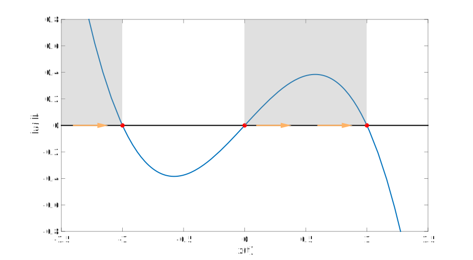

Code
using Plots, DifferentialEquations
default(label="", linewidth=2, markersize=4, size=(500,320))\[ \newcommand{\float}{\mathbb{F}} \newcommand{\real}{\mathbb{R}} \newcommand{\complex}{\mathbb{C}} \newcommand{\nat}{\mathbb{N}} \newcommand{\integer}{\mathbb{Z}} \newcommand{\bfa}{\mathbf{a}} \newcommand{\bfb}{\mathbf{b}} \newcommand{\bfc}{\mathbf{c}} \newcommand{\bfe}{\mathbf{e}} \newcommand{\bff}{\mathbf{f}} \newcommand{\bfh}{\mathbf{h}} \newcommand{\bfp}{\mathbf{p}} \newcommand{\bfq}{\mathbf{q}} \newcommand{\bfu}{\mathbf{u}} \newcommand{\bfv}{\mathbf{v}} \newcommand{\bfw}{\mathbf{w}} \newcommand{\bfx}{\mathbf{x}} \newcommand{\bfy}{\mathbf{y}} \newcommand{\bfz}{\mathbf{z}} \newcommand{\bfA}{\mathbf{A}} \newcommand{\bfB}{\mathbf{B}} \newcommand{\bfD}{\mathbf{D}} \newcommand{\bfE}{\mathbf{E}} \newcommand{\bfP}{\mathbf{P}} \newcommand{\bfV}{\mathbf{V}} \newcommand{\bfW}{\mathbf{W}} \newcommand{\bfX}{\mathbf{X}} \newcommand{\fundm}{\boldsymbol{\Phi}} \newcommand{\bfzero}{\boldsymbol{0}} \newcommand{\bfmu}{\boldsymbol{\mu}} \newcommand{\opA}{\mathcal{A}} \newcommand{\rmn}[2]{\mathbb{R}^{#1 \times #2}} \newcommand{\cmn}[2]{\mathbb{C}^{#1 \times #2}} \newcommand{\dd}[2]{\frac{d #1}{d #2}} \newcommand{\ddd}[2]{\frac{d^2 #1}{d #2^2}} \newcommand{\pp}[2]{\frac{\partial #1}{\partial #2}} \newcommand{\norm}[1]{\left\lVert \mathstrut #1 \right\rVert} \newcommand{\abs}[1]{\left\lvert \mathstrut #1 \right\rvert} \newcommand{\twonorm}[1]{\norm{#1}_2} \newcommand{\onenorm}[1]{\norm{#1}_1} \newcommand{\infnorm}[1]{\norm{#1}_\infty} \newcommand{\innerprod}[2]{\langle #1,#2 \rangle} \newcommand{\pr}[1]{^{(#1)}} \newcommand{\diagm}[3]{\begin{bmatrix} #1 & & & \\ & #2 & & \\ & & \ddots & \\ & & & #3 \end{bmatrix}} \newcommand{\twovec}[2]{\begin{bmatrix} #1 \\ #2 \end{bmatrix}} \newcommand{\threevec}[3]{\begin{bmatrix} #1 \\ #2 \\ #3 \end{bmatrix}} \newcommand{\twomat}[4]{\begin{bmatrix} #1 & #2 \\ #3 & #4 \end{bmatrix}} \newcommand{\twodet}[4]{\begin{vmatrix} #1 & #2 \\ #3 & #4 \end{vmatrix}} \newcommand{\eye}[1]{\mathbf{e}_#1} \newcommand{\meye}{\mathbf{I}} \newcommand{\diag}{\operatorname{diag}} \newcommand{\sign}{\operatorname{sign}} \newcommand{\dist}{\operatorname{dist}} \newcommand{\simil}{\operatorname{sim}} \newcommand{\vec}{\operatorname{vec}} \newcommand{\unvec}{\operatorname{unvec}} \newcommand{\ee}{\times 10^} \newcommand{\floor}[1]{\lfloor#1\rfloor} \newcommand{\argmin}{\operatorname{argmin}} \newcommand{\rank}{\operatorname{rank}} \newcommand{\span}{\operatorname{span}} \newcommand{\nullsp}{\operatorname{nullsp}} \newcommand{\nullity}{\operatorname{nullity}} \newcommand{\rowsp}{\operatorname{rowsp}} \newcommand{\colsp}{\operatorname{colsp}} % \newcommand{\dimen}{\operatorname{dim}} \newcommand{\augmat}[2]{\left[ #1 \;\middle|\; #2 \right]} \]
using Plots, DifferentialEquations
default(label="", linewidth=2, markersize=4, size=(500,320))For this part of the course we will be concerned with a first-order ODE (ordinary differential equation) written in the standard form
\[ \dd{x}{t} = f(t,x). \tag{1.1}\]
The term first-order indicates that only the first derivative appears and not \(x''\), \(x'''\), etc.
Example 1.1 The equation
\[ 2t\dd{x}{t} - x = 0 \]
can be rearranged into
\[ \dd{x}{t} = \frac{x}{2t}, \tag{1.2}\]
which is in the standard form of Equation 1.1 with \(f(t,x) = x/2t\). (We might expect some difficulty with this particular ODE at \(t=0\).)
Definition 1.1 In Equation 1.1 we call \(x\) the dependent variable and \(t\) the independent variable.
We use these particular variable names for theoretical discussion, but in practice the variables could be named anything.
Given \(f(t,x)\), the goal is to find the unknown function \(x(t)\).
Definition 1.2 A solution to Equation 1.1 is a function \(x(t)\) that makes the ODE a true equation when inserted.
It’s easy to check or verify whether a proposed function \(x(t)\) is a solution: substitute it into the ODE and manipulate it until you can ascertain whether the equation holds.
Example 1.2 Show that \(x(t)=t^2\) does not solve Equation 1.2, while \(x(t)=\sqrt{t}\) does.
Solution. If \(x=t^2\), then \(\dd{x}{t}=2t\), while
\[ \frac{x}{2t} = t/2. \]
Since \(2t\neq t/2\) in general, we do not have a solution. On the other hand, if \(x=\sqrt{t}\), then
\[ \dd{x}{t} = \frac{1}{2\sqrt{t}}, \qquad \frac{x}{2t} = \frac{\sqrt{t}}{2t} = \frac{1}{2\sqrt{t}}. \]
Hence \(x=\sqrt{t}\) is a solution for \(t>0\).
If you are given and ODE and can somehow guess your way to an \(x(t)\) that works as a solution, then you’ve solved the problem. Somewhat shockingly, this is the standard procedure much of the time. Even more shockingly, almost every practical ODE can’t be solved at all in terms of functions that you’re likely to have heard of before.
It would be fair to question the prudence of learning a subject in which nearly every problem can never be solved. But there are three reasons why we carry on with it:
Before getting bogged down with generalities, let’s dive in to some illustrative archetypes of first-order equations. Each is simple enough to understand in detail, and yet they illustrate aspects of things we will encounter all the time.
You won’t find an ODE easier than
\[ \dd{x}{t} = a, \tag{1.3}\]
where \(a\) is a constant. Every function of the form \(x(t) = at + C\), where \(C\) is an arbitrary constant, is a solution. That is, the ODE says the solution has a constant rate of change, and therefore the solution has a constant slope.
This problem is a special case of
\[ \dd{x}{t} = f(t). \]
Unlike in the general ODE Equation 1.1, the function \(f\) here does not depend on the unknown solution \(x\). Therefore, its solution is an indefinite integral: \(x(t) = \int f(t) \, dt\). As usual, the indefinite integration leaves an arbitrary constant.
Because solving ODEs encompasses standard integration as a special case, the process of solving an ODE is often referred to as integrating it.
As banal as Equation 1.3 is, it reveals an important fact:
Solutions of ODEs are not necessarily unique.
Now let’s move one rung up the ladder of complexity.
Suppose \(x(t)\) represents a quantity of something that reproduces itself at a constant rate. In addition to biological agents such as bacteria and infected individuals, this could be upvoted memes on a social network, for example. Mathematically we have a fixed growth rate per capita, i.e.,
\[ \frac{1}{x} \dd{x}{t} = a \]
for a positive constant \(a\). This gives the ODE
\[ \dd{x}{t} = ax \qquad (a > 0). \tag{1.4}\]
A named quantity such as \(a\) that is neither the independent nor the dependent variable is often called a parameter. A parameter is assumed to be constant unless notation indicates otherwise. A common convention is to choose parameters to be positive where reasonable. If we needed a negative value, we would write \(-a\) with the understanding that \(a\) is positive.
Suppose we define
\[ x(t) = C e^{at} \tag{1.5}\]
for an unspecified constant \(C\). Then
\[ \dd{x}{t} = C\cdot ae^{at} = a\left( Ce^{at} \right) = ax. \]
Hence we have proved that Equation 1.5 is a solution of Equation 1.4. Note that \(x\) never changes sign, and \(|x(t)|\) grows without bound as \(t\to\infty\).
The solution Equation 1.5 again has an arbitrary constant. Unlike for Equation 1.3, however, this constant appears as a multiplier, not as an addend. It turns out that we will always get such a constant popping up in some form, which leads to the following definition:
Definition 1.3 The general solution of a first-order ODE is a family of functions, parameterized by \(C\), such that every member of the family for a particular value of \(C\) is a solution.
It’s common to refer to the parameter \(C\) as an integration constant. In some problems, there may be restrictions placed on \(C\).
Now consider
\[ \dd{x}{t} = -ax \qquad (a > 0). \tag{1.6}\]
This represents constant per capita decay, which is characteristic of radioactive isotopes and populations of organisms dying faster than they can reproduce. The general solution is
\[ x(t) = C e^{-at}, \]
which indicates exponential decay to zero as \(t\to\infty\).
In this and the growth archetype, the function \(f\) in Equation 1.1 depends only on the solution \(x\) and not explicitly on the independent variable \(t\). Such an ODE is called autonomous, time-invariant, or constant-coefficient:
\[ \dd{x}{t} = f(x). \tag{1.7}\]
Our next stop is the ODE
\[ \dd{x}{t} = 2tx. \tag{1.8}\]
Because the formula for \(\dd{x}{t}\) has a dependence on time, we say it is a non-autonomous equation, also termed time-varying or variable-coefficient. Comparing Equation 1.8 to constant growth, \(x'=ax\), we could say that the function \(2t\) now plays the role of the growth rate \(a\). In other words, this is a situation of accelerating growth. The general solution is
\[ x(t) = C e^{t^2}, \tag{1.9}\]
which grows superexponentially as \(t\to\infty\).
Example 1.3 Substituting Equation 1.9 into Equation 1.8 yields
\[ \begin{split} \frac{d}{dt} \left( C e^{t^2} \right) &= 2t \left(C e^{t^2} \right), \\ C \left(2t e^{t^2} \right) &= 2t \left( C e^{t^2} \right), \end{split} \]
which is evidently true. Hence we have established Equation 1.9 as a solution for any constant \(C\).
More general variable growth looks like \(x'=a(t)x\). If \(a\) changes sign, the character of the equation flips between momentary growth and decay.
All of the examples so far in this section have an ODE in the form
\[ \dd{x}{t} = a(t) x + b(t), \tag{1.10}\]
in which the dependent variable appears (if at all) just as itself to the first power. This is called a linear first-order ODE, because the dependence of \(\dd{x}{t}\) on \(x\) is linear. It does not imply that the solution \(x(t)\) is a linear function of \(t\), but linear problems have a lot of structure that will make them relatively easy to understand.
Our final archetype, by contrast, is nonlinear. Comparing
\[ \dd{x}{t} = x^2 \tag{1.11}\]
to constant growth \(x'=ax\), it is irresistible to interpret this equation as a growth process whose rate at any instant is the momentary value of the solution itself. This suggests a kind of runaway feedback loop.
The general solution is
\[ x(t) = \frac{1}{C-t}. \tag{1.12}\]
Example 1.4 The derivative of Equation 1.12 leads to
\[ \dd{x}{t} = -(C-t)^{-2}\cdot \dd{}{t}(C-t) = (C-t)^{-2} = x^2. \]
This proves we have a solution of Equation 1.11.
Note that for \(C>0\) in Equation 1.11, \(x(t)\to \infty\) as \(t\to C^{-1}\). This is a finite-time blowup, which we did not observe in any of the linear growth processes.
Is there any point to an ODE whose solution blows up in a finite time? Maybe. This particular ODE describes, for instance, the evolution of the slope of the line of sight to an airplane flying straight over you. When the airplane is directly overhead, the slope is infinite. So while the model becomes mathematically invalid at that moment, it does describe a concrete physical situation.
That concludes our bus tour of first-order equations. It’s time to get serious about solving some of them.
One of the important findings in Section 1.1 is that solutions of first-order ODEs are not unique. The manifestation of the nonuniqueness is the presence of an integration constant, and we get a general solution that describes a family of functions that provide all possible solutions.
In scientific and engineering problems, we typically have an additional constraint that picks out a single member of the general solution family—a particular solution. Usually that constraint takes the form of a specified value,
\[ x(t_0) = x_0, \]
where \(t_0\) and \(x_0\) are considered to be given. In this case the constraint \(x(t_0)=x_0\) is called an initial condition, and it’s usually understood that the problem is to be solved for \(t>t_0\). Such a constraint combined with a first-order ODE leads to an initial-value problem:
Definition 1.4 (Initial-value problem, IVP) \[ \dd{x}{t} = f(t,x), \quad x(t_0) = x_0. \tag{1.13}\]
A solution of an IVP has to satisfy both the ODE and the initial condition. This is (for our purposes) enough to specify the solution uniquely.
Example 1.5 Solve the IVP
\[ \dd{x}{t} = ax, \qquad x(2)=5. \]
Solution. In Section 1.1 we found that the general solution of \(x'=ax\) is \(x(t)=Ce^{at}\). If we are supplied with the initial value \(x(2)=5\), then we require
\[ 5 = x(2) = Ce^{2a}, \]
in which case \(C=5e^{-2a}\). Thus the solution to this IVP is
\[ x(t) = 5e^{-2a}\cdot e^{at} = 5e^{a(t-2)}. \]
A graphical interpretation of the role of an initial condition is simple: the general solution is a family of curves in the \((t,x)\) plane, and the initial condition is a point in the plane that the one particular solution of interest must pass through.
Example 1.6 Here is an illustration of how an initial condition \(x(3)=20\) selects one solution of \(x'=1.25x\).
a = 1.25
plt = plot(xaxis=("t"),yaxis=("x",(-60,60)))
for C in (-3:3)/3
plot!(t -> C*exp(a*t),1,4)
end
scatter!([3],[20],m=(8,:black))
plot!(t->20exp(a*(t-3)),1,4,l=(2.5,:black))
title!("Picking the solution with x(3)=20")In standard problems, at most one particular solution can pass through a given point \((t_0,x_0)\). Otherwise, the state of the system for \(t > t_0\) would seem to be ambiguous.
An initial-value problem has a unique solution, which makes it a suitable target for a numerical approximation. This is how virtually all IVPs are solved in practice.
Example 1.7 (Constant growth) Here’s a numerical approximation in Julia for the ODE of constant growth \(x'=2x\), subject to \(x(1)=3\):
f = (x,p,t) -> 2x
ivp = ODEProblem(f,3.,(1.,5.))
x = solve(ivp)
plot(x,label="",xlabel="t",ylabel="x",title="Constant growth rate")Exponential growth or decay is best plotted on a log-linear scale, where the solution becomes a straight line:
plot(x,label="",xaxis="t",yaxis=("x",:log10),title="Constant growth rate (log scale)")Example 1.8 (Variable growth) Here’s our example of variable growth. Note that we are not using the known exact solution, but just letting Julia create a numerical approximation by other means.
f = (x,p,t) -> 2t*x
ivp = ODEProblem(f,1.,(0.,5.))
x = solve(ivp)
plot(x,label="",xlabel="t",yaxis=("x",:log10),title="Growing growth rate")Even on the log scale, the solution bends upward, showing superexponential growth.
Example 1.9 (Nonlinear) Finally, here is a numerical solution of the nonlinear archetype problem \(x'=x^2\), \(x(0)=0.5\), for \(0 \le t \le 4\):
f = (x,p,t) -> x^2
ivp = ODEProblem(f,0.5,(0.,4.))
x = solve(ivp)
plot(x,label="",xlabel="t",yaxis=("x",:log10),title="Nonlinear growth")The warning issued by Julia above can mean that there is a bug in the code, but in this case, it’s just Julia noticing the finite-time blowup. In fact, it gets the true blowup time rather accurately.
Exact solutions of ODEs are few and far-between. In addition to numerical solutions, there are a few tools that can be used to gain insight about an ODE without knowing or producing a solution. These are grouped together under the name of qualitative methods.
In the scalar equation \(x'=f(t,x)\), the function \(f\) gives the slope of any solution at any point in the \((t,x)\) plane. Hence, while it is usually not trivial to draw curves for the solutions, it is straightforward to draw the instantaneous slopes of them. Here is a basic Julia function for it.
function dirfield(f,tlims,xlims)
t = range(tlims...,length=16)
x = range(xlims...,length=16)
T = vec([t for t in t, x in x])
X = vec([x for t in t, x in x])
F = f.(T,X)
avg = sum( @. sqrt(F^2+1) ) / length(F)
scale = 0.05*max(tlims[2]-tlims[1],xlims[2]-xlims[1])/avg
quiver( T,X,quiver=(ones(size(F))*scale,F*scale) )
end;Example 1.10 The logistic equation is
\[ \dd{x}{t} = ax-bx^2, \tag{1.14}\]
where \(a\) and \(b\) are positive parameters. For the case \(a=3\), \(b=2\), its direction field is
f = (t, x) -> 3x - 2x^2
dirfield(f, [0, 2], [0, 1.6])
title!("Direction field of 3x-2x²")
xlabel!("t"); ylabel!("x")Note that at \(x=0\), the arrows are purely horizontal. That’s because the function \(x(t)=0\) is a solution.
Every plot of a solution will have the arrows as tangents to it. For instance, we will add a few solution curves to the direction field above:
for x0 in [0.2, 0.6, 1.0]
ivp = ODEProblem((x, _, t) -> 3x - 2x^2, x0, (0., 2.))
x = solve(ivp)
plot!(x.t, x.u, l=2)
end
plot!()Example 1.11 Here is a direction field for \(x'=t-x^2\).
f = (t, x) -> t - x^2
dirfield(f, [-1,2], [-2,2])
title!("Direction field of t-x²")Note that the arrows are horizontal along the sideways parabola \(t=x^2\), because that is where the slope is zero.
Many problems describe a self-contained system. For example, a small pendulum operates the same regardless of what time of day you first push on it.
Definition 1.5 (Autonomous ODE) An autonomous first-order ODE is an equation of the form
\[ \dd{x}{t}=f(x). \tag{1.15}\]
An ODE is autonomous if, and only if, its direction field looks the same along every vertical line in the \((t,x)\) plane. This can be seen, for example, in Example 1.10.
Suppose that \(\hat{x}\) is a root of the function \(f\) in Equation 1.15, that is, it satisfies \(f(\hat{x})=0\). Then the constant function \(x(t)\equiv \hat{x}\) a solution of Equation 1.15.
Definition 1.6 (Steady state / Equilibrium) For the autonomous ODE \(x'=f(x)\), any root \(\hat{x}\) of \(f\) is called a steady state, equilibrium value, fixed point, or critical point.
When you see one concept with a lot of different names, pay attention. It was important enough to have been discovered multiple times.
One of the most important characteristics of each steady state is its stability. Imagine slicing a globe in half and laying a marble at the bottom inside the southern hemisphere. That marble should lay still in an equilibrium state. If you nudge the marble a little, it will oscillate but eventually come back to rest at the bottom of the hemisphere. We call this an asymptotically stable equilibrium—if the system is perturbed gently enough, solutions return to the equilibrium.
Now suppose you put down the northern hemisphere with the equator on the surface of a table. If you can place the marble perfectly at the north pole, it should stay there, in principle; it should experience a purely downward force. In practice, though, this is probably impossible to achieve, because any deviation from perfect symmetry in the globe, marble, or placement will cause the marble to roll away from the pole. We call this pole an unstable equilibrium.
(There are other classes of equilibria, but they are much less frequently encountered.)
The major difference between asymptotically stable and unstable equilibria in the real world is that usually, only the asymptotically stable ones are observable. It’s easy to dangle a broom downward practically forever using just two fingers, but try that with the broom pointing upward!
It’s usually quite easy to determine the stability of an equilibrium point without finding solutions.
Example 1.12 Consider the ODE \(x'=x-x^3\). We will start by graphing \(f(x)=x-x^3\).

The equilibrium solutions occur at the crossings of the \(x\)-axis in the plot, where \(dx/dt=0\).

Now we highlight those parts of the plot where the graph is above the \(x\)-axis, i.e., where \(dx/dt > 0\).
Imagine that the solution is represented by a point \(x(t)\) sliding along the \(x\)-axis. Under the highlighted regions, this point has to be sliding rightward, because \(x'>0\) there.

Similarly, on the remaining segments of the \(x\)-axis, the solution must be sliding leftward.

Graphically it is now clear that the steady states at \(x=\pm 1\) are asymptotically stable, while the one at \(x=0\) is unstable.
If the function \(f\) is differentiable, there is also a simple analytical test:
As you might surmise, the case \(f'(\hat{x})=0\) is ambiguous, and additional analysis is needed to reveal the stability.
All first-order problems in the autonomous form \(x'=f(x)\), and more generally problems in the form
\[ x' = f(x,t) = g(x) h(t), \]
are called separable equations and can be solved systematically, up to performing integrations. The process is more convenient to describe if we instead suppose that
\[ \dd{x}{t} = \frac{h(t)}{g(x)}, \]
which is equivalent (only changing how \(g\) is defined). Ignoring formalities, we treat \(dx/dt\) as though it’s a fraction and rewrite this as
\[ g(x)\, dx = h(t)\, dt. \]
(That step will give a pure mathematician the vapors, but we soldier on.) In principle, all we need to do is integrate both sides:
\[ \int g(x)\, dx = \int h(t)\, dt \quad \Rightarrow \quad G(x) = H(t) + C, \]
where \(C\) is the integration constant. (Having an integration constant on both sides would not change anything.)
This description is all rather generic. The process is very easy to grasp from following a few examples.
Example 1.13 Solve the variable growth archetype ODE, \(x'=2t x\).
Solution. We express \(x'\) as \(dx/dt\) and then isolate the variables:
\[ \frac{d x}{x} = 2t\,d t. \]
Integrating both sides leads to \(\ln |x| = t^2 + C\), or
\[ |x(t)|=A e^{t^2}, \]
where \(A\) must be positive, since it is the exponential of a real \(C\). Taking the absolute value off of \(x\), however, is the same as allowing \(A\) to be negative as well. Note also that \(A=0\) clearly leads to the constant solution \(x(t)\equiv 0\). Therefore, we finally conclude that \(x=B e^{t^2}\) for an arbitrary \(B\).
In Example 1.13, the first step involved dividing the equation through by \(x\). This implies that we made \(x=0\) impossible to achieve. That’s why we had to check it manually at the very end. In the general separable case of \(x'=g(x)h(t)\), we first divide through by \(g(x)\), so the last step is to reintroduce each root \(\hat{x}\) of \(g\) as an equilibrium solution.
Example 1.14 Solve \(x'=t^2/(x^3-2)\), subject to \(x(0)=4\).
Solution. Separation and integration lead to
\[ \int x^3\, dx = \int t^2\, dt, \]
or
\[ \frac{1}{4}x^4 - 2x = C + \frac{1}{3}t^3. \]
Since we did not divide through by anything, there are no additional equilibrium solutions to include.
We could work hard to try to solve the final expression explicitly for \(x\), but it’s best to leave it in implicit form. This is a common limitation of separable solutions. Even in implicit form, though, we can apply an initial condition to obtain a particular solution. If we add the condition \(x(0)=4\), for instance, then we set \(x=4\) and \(t=0\) in the implicit equation to get
\[ \frac{4^4}{4} - 2 \cdot 4 = C + 0. \]
Hence \(C=56\).
Sometimes the separable structure isn’t immediately apparent, and you have to manipulate the expressions before you can see it.
Example 1.15 Find the general solution of \(t x' = x - t x\).
Solution. Nothing happens until you see that you can factor out \(x\) on the right side to get
\[ \dd{x}{t} = \frac{x(1-t)}{t}, \]
which is in a separated form. Then
\[ \frac{dx}{x} = (t^{-1}-1)\,dt, \]
and thus \(\ln|x| = \ln|t|-t+C\), or
\[ |x| = e^C |t| e^{-t}. \]
Once we take off the absolute values, and defining \(A=e^C\), we have
\[ x= \pm A t e^{-t} \quad (A>0). \]
We divided the ODE through by \(x\) and therefore have to include \(x(t) \equiv 0\) as an equilibrium solution. This is easily expressed by noting that \(\pm A\) can actually be any real number, so we can write the general solution as
\[ x= C t e^{-t}. \]
Note that an autonomous equation is, by definition, separable.
Example 1.16 Solve the autonomous ODE \(x'=\csc x\).
Solution. Multiplying through by \(\sin x\), we obtain \(\sin x\, dx = dt\), so integration produces
\[ -\cos(x) = t + C. \]
Since \(|\cos(x)| \le 1\), this implies a significant restriction relating \(t\) and \(C\).
We now begin a close look at the linear case.
Linear problems are pretty much all we consider from this point on.
Definition 1.7 (First-order linear ODE) A first-order linear ODE is an equation of the form
\[ a_1(t)\dd{x}{t} + a_0(t) x = g(t). \tag{1.16}\] The standard form of such a problem is
\[ \dd{x}{t} + P(t) x = f(t). \tag{1.17}\]
We call \(f(t)\) the forcing function and \(P(t)\) the coefficient of the ODE.
A linear ODE has a linear dependence on the dependent variable \(x\). It may have arbitrary dependence on the independent variable \(t\).
Never overlook the \(a_1(t)\) in Equation 1.16. If you forget to divide through by it to get the standard form, everything that follows will be wrong.
There is an alternate notation for Equation 1.17 that will help us highlight important properties of linearity as we go.
Definition 1.8 (Linear operator) A linear operator \(\opA\) is a rule for transforming functions to other functions, such that
\[\begin{split} \opA[cx(t)] & =c\opA[x(t)], \\ \opA[x(t) + y(t)] &= \opA[x(t)] + \opA[y(t)], \end{split}\]for all functions \(x\) and \(y\) and numbers \(c\).
In the present context we are interested in the linear operator
\[ \opA[x] = \dd{x}{t} + P(t)x. \tag{1.18}\]
We can now express the ODE Equation 1.16 abstractly as
\[ \opA[x]=f. \]
Example 1.17 The equation
\[ t x' = \sin(t) - x \]
is linear. To write it in operator form, we rearrange to
\[ x' + \frac{1}{t}x = \frac{\sin(t)}{t}. \]
Thus the linear operator for this ODE is \(\opA[x]=x' + \tfrac{1}{t}x\), and the ODE is
\[ \opA[x] = \frac{\sin(t)}{t}. \]
The equation \(\opA[x]=0\), or Equation 1.17 with forcing function \(f\) set to zero, plays a key role.
Definition 1.9 (Homogeneous ODE) A linear homogeneous ODE takes the form
\[ \dd{x}{t} + P(t)x = 0, \]
or \(\opA[x]=0\).
Linear homogeneous problems have a key property that allows turning individual solutions into sets of them.
Theorem 1.1 (Superposition) If \(x_1(t), x_2(t),\ldots x_k(t)\) are solutions of \(\opA[x]=0\), then so is any linear combination \(c_1x_1 + \cdots + c_kx_k\) for constants \(c_j\).
Proof. Because of linearity we can write
\[ \opA[c_1x_1 + \cdots + c_kx_k] = c_1\opA[x_1] + \cdots + c_k\opA[x_k]. \]
By assumption, each \(\opA[x_j]=0\). So the sum on the right is zero as well.
Corollary 1.1 If \(x(t)\) is a solution of \(\opA[x]=0\), then so is \(c x(t)\) for an arbitrary constant \(c\).
The following fact shows that the problem \(\opA[x]=f\) with nonzero forcing \(f\) still brings the homogeneous case along with it.
Theorem 1.2 All solutions of \(\opA[x]=f\) may be written as
\[ x(t) = x_h(t) + x_p(t), \] where \(x_h\) is the general solution of \(\opA[x]=0\) and \(x_p\) is any one particular solution of \(\opA[x]=f\). We call this the general solution of the linear ODE.
We can now outline a plan of attack for solving \(\opA[x]=f\).
Theorem 1.3 (Solution of a first-order linear ODE) Follow these steps to find the general solution of the linear first-order ODE \(\opA[x]=f\):
Note that because of Theorem 1.1, the homogeneous part \(x_h\) will contain the integration constant.
The next two sections provide the details for steps 1 and 2 of Theorem 1.3.
Step 1 of our solution strategy in Theorem 1.3 is to solve the homogeneous problem \(\opA[x]=0\), or
\[ \dd{x}{t} + P(t) x = 0. \tag{1.19}\]
We know that the solution of \(x=ax\) for constant \(a\) is \(x(t)=\exp(at)\). The solution is exponential in this more general case as well:
\[ x(t) = \exp\bigl[q(t)\bigr], \]
for some \(q(t)\) yet to be determined. Note that
\[ x'(t) = q'(t) e^{\,q(t)} = q'(t) x. \]
If this is to be a solution of Equation 1.19, all we need is that \(q'(t)=-P(t)\). This is solved by simple integration. To summarize:
Theorem 1.4 (Solution of \(x'+P(t)x=0\)) To solve the linear first-order homogeneous ODE \(\opA[x]=0\), also written as Equation 1.19, perform the following steps, ignoring constants of integration: \[ \begin{split} q(t) &= - \int P(t) \, dt, \\ x_1(t) &= \exp\bigl[q(t)\bigr] \\ x(t) &= c_1 x_1(t). \end{split} \tag{1.20}\]
In our terminology, \(x_1\) in Equation 1.20 is a particular solution of \(\opA[x]=0\), while \(x\) is the general solution of \(\opA[x]=0\) as well as the homogenous part of the solution associated with \(\opA[x]=f\) in Theorem 1.3. Got that?
If you’re anxious about having \(c_1\) and \(x_1\) in Equation 1.20 without also having \(c_2\) and \(x_2\)—if you know, you know—just sit tight until the next chapter.
Example 1.18 Solve \(x'=\sin(t) x\).
Solution. By comparison to the standard form Equation 1.19, we find that \(P(t)=-\sin(t)\). Hence
\[ q(t) = - \int -\sin(t)\, dt = - \cos(t). \]
The general solution is thus
\[ x(t) = c_1 \exp[ -\cos(t) ]. \]
Example 1.19 Solve the homogeneous IVP
\[ t x' = 2x, \quad x(2) = 12. \]
Solution. First we rewrite the ODE in standard form as
\[ x' - \frac{2x}{t} = 0, \]
from which we see that \(P(t)=-2/t\). We first find the general solution by integration:
\[ x(t) = c_1 \exp\left[ \int 2t^{-1}\, dt \right] = c_1 \exp\bigl[2\ln(t)\bigr] = c_1 t^2. \]
To eliminate the integration constant, we apply the initial condition:
\[ 12 = x_h(2) = c_1\cdot 2^2. \]
Hence \(x(t) = 3t^2\).
In Example 1.19, the standard form of the ODE had \(P(t)=-2/t\) as the coefficient of \(x\). Because \(P(0)\) is undefined, we call \(t=0\) a singular point of the ODE. It is possible for the general solution to be undefined at a singular point. That did not happen in Example 1.19, but here is a similar problem where it does.
Example 1.20 The homogeneous equation
\[ x' + \frac{2x}{t} = 0 \]
has \(P(t)=2/t\), so
\[ q(t) = - \int \frac{2}{t} \, dt = -2 \ln(t), \]
which gives the homogeneous solution
\[ x_1(t) = e^{q(t)} = t^{-2}. \]
This solution fails to exist at \(t=0\) because of the singular point implied by \(P\).
Section 1.6 explained how to find the general solution \(x_h(t)\) of a homogeneous linear system \(\opA[x] = 0\). The next step of our solution strategy in Theorem 1.3 is to find some particular solution of \(\opA[x]=f\) for the given \(f(t)\). After that, the general solution is in our hands.
The form of the homogeneous solution is
\[ x_h(t) = c_1 e^{q(t)}, \]
where \(c_1\) is an arbitrary constant and \(q = -\int P\, dt\). Something weird and useful happens if we upgrade \(c_1\) to an unknown function \(k(t)\). Setting \(x_p(t)=k(t) e^{q(t)}\), then
\[ \begin{split} \opA[x_p] &= x_p' + P(t) x_p \\ & = k'e^q + k (e^q q') + P k e^q \\ & = e^q ( k'+ q'k + Pk ) \\ &= e^q (k' + (-P)k + Pk) = e^q k'. \end{split} \]
So, to solve \(\opA[x_p] = f\), we can set \(e^q k' = f\). Since \(f\) is considered given and we already know how to compute \(q\), this can be considered a way to define \(k'\), and then \(k\) is just one more integration away.
This technique for finding \(x_p\) is known as the variation of parameters formula, or VoP formula for short. We present it here along with the rest of the steps in Theorem 1.3 as a complete method to find the general solution.
Theorem 1.5 (Variation of parameters (VoP)) To find the general solution of \(\opA[x]=f\), compute the following, ignoring constants of integration:
\[ \begin{split} q(t) &= -\int P(t)\, dt, \\ x_1(t) &= e^{q(t)}, \\ k(t) &= \int \frac{f(t)}{x_1(t)} \, dt, \\ x_p(t) &= k(t) x_1(t), \\ x(t) &= c_1 x_1(t) + x_p(t). \end{split} \]
Keeping track of all the characters appearing in Theorem 1.5 is as difficult as following Game of Thrones. To remind you: \(x_1(t)\) is a solution of the associated homogeneous equation \(\opA[x]=0\), \(c_1 x_1(t)\) is the general solution of that problem, \(x_p(t)\) is one particular solution of \(\opA[x]=f\), and the final \(x(t)\) is the general solution of \(\opA[x]=f\).
The unstated setup step before Theorem 1.5 can even be applied is to put a given linear ODE into the standard form, \(x' + P(t) x = f\). On this, everything depends.
Example 1.21 Solve \(3x'=12x+24t\).
Solution. Rewriting the ODE in standard form as \(x'-4x=8t\), we identify \(P(t)=-4\) and \(f(t)=8t\). Then
\[ q(t) = - \int -4\,dt = 4t, \]
and
\[ x_1(t) = e^{4t}, \]
and
\[ k(t) = \int \frac{8t}{e^{4t}}\, dt = -\frac{1}{2} (4t+1) e^{-4t}, \]
where you (or your computer) use integration by parts to perform the integral. We continue to
\[ x_p(t) = x_1(t) k(t) = -\frac{1}{2} (4t+1), \]
so that finally, we have the general solution
\[ x(t) = c_1 e^{4t} - \frac{1}{2} (4t+1). \]
Example 1.22 Find a particular solution of \(x'= 2t x + 6t\).
Solution. This problem is deliberately worded sneakily to see if you have been paying attention. The function \(x_p(t)\) in Theorem 1.5 is all we need. First, note that \(\opA[x]=x'-2tx\) and \(f(t)=6t\). Then \(P(t)=-2t\), so
\[ q(t) = - \int -2t\, dt = t^2, \]
and
\[ x_1(t) = e^{t^2}. \]
Thus,
\[ k(t) = \int \frac{6t}{e^{t^2}}\, dt = \int 6t e^{-t^2}\, dt = -3 e^{-t^2}, \]
leading to
\[ x_p(t) = k(t) x_1(t) = -3. \]
(Technically, this problem has infinitely many solutions. Any solution of the ODE is a particular solution of it. So you could freeze \(c_1=1\) in Theorem 1.5 and present \(e^{t^2} - 3\) as a particular solution. You’d be right, but you’d also be a little annoying.)
First-order linear ODEs can also be separable! In Example 1.22 we could have started with writing
\[ \dd{x}{t} = 2t(x + 3), \]
on which separation gives \(\ln|x+3| = t^2 + C\). For a particular solution, we can use any \(C\) we want, and \(C=0\) is the easiest. This leads to \(x(t) = e^{t^2} - 3\), which is a much less annoying way to derive the alternative solution that was given.
Example 1.23 Solve the IVP
\[ (2+t) x'= x - 1, \quad x(0) = -5. \]
Solution. First we put the ODE into standard form,
\[ x' - \frac{1}{2+t} x = -\frac{1}{2+t}. \]
Note that \(P(t) = -1/(2+t)\) and \(f(t)=-1/(2+t)\). Next,
\[ q(t) = - \int - \frac{1}{2+t}\, dt = \ln|2+t|. \]
Taking the point of view that \(t\ge 0\) is implied by the initial condition, we observe that \(|2+t|=2+t\). Hence
\[ x_1(t) = \exp[ \ln(2+t) ] = 2+t. \]
Next,
\[ \begin{split} k(t) & = \int - \frac{1}{2+t} \cdot \frac{1}{2+t} \, dt \\ &= -\int (2+t)^{-2} \, dt \\ &= (2+t)^{-1}. \end{split} \]
Thus, \(x_p(t)=k(t)x_1(t)=1\) and the general solution is
\[ x(t) = c_1(2+t) + 1. \]
Finally, we apply the initial condition to solve for \(c_1\):
\[ -5 = x(0) = 2c_1+1 \quad \implies \quad c_1=-3. \]
Hence \(x(t) = 1-3(2+t) = -5-3t.\)
It takes a rather special relationship between \(P(t)\) and \(f(t)\) to make all the integrals in the VoP formula reasonable to do by hand. So, if you are solving an exercise and find yourself faced with an impossible or really ugly integral, you likely have made some earlier mistake.
You should probably skip this section. You don’t need it.
Textbooks be like:
A different process for arriving at the solution to a linear first-order ODE goes by the name of the integrating factor. Mathematically and computationally, it’s identical to Theorem 1.3, but organized slightly differently.
The ODE is again
\[ x'(t) + P(t) x(t) = f(t). \]
Define the integrating factor
\[ \mu(t) = \exp \left[ \int P(t)\, dt \right]. \]
(This is just \(1/q(t)\) as defined in Equation 1.20.) When you multiply the entire ODE through by \(\mu(t)\), the left-hand side of the equation can be simplified by the product rule and chain rule for derivatives:
\[ \begin{split} \dd{}{t} \left[ \mu(t) x(t) \right] &= \mu x' + \mu' x \\ &= \mu x' + \left(P \mu \right) x \\ &= \mu(t) f(t). \end{split} \]
Now integrate both sides:
\[ \mu(t) x(t) = \int \mu(t) f(t)\, dt + c_1. \]
Solve for \(x\), and you are finished—assuming you can do the integrals.
There is nothing new going on here, really. You do the same two integrals that make up Theorem 1.3, it works out for exactly the same reason, and it gives an equivalent result. The integrating factor involves a bit less notation, but the notation we developed supports machinery you will learn in the next chapter, when the integrating factor is no longer an option.
First-order ODEs are often used to model situations of growth and decay. The linear problem \(x'=ax+f(t)\) is a prototype for many important applications:
In practice, interest rates may be quoted yearly, or quarterly, or according to any other finite time period. The rate in an ODE model is the continuously compounded rate.
Mathematically, positive \(a\) represents growth and negative \(a\) leads to decay. In the simplest models, \(a\) is constant.
The units of \(dx/dt\) are those of \(x\) divided by those of \(t\). Let’s write these as \(X/T\). Added terms all need to have the same units, so both \(f(t)\) and \(a(t)x\) have those units as well. Consequently the rate constant \(a\) has units \(1/T\). Since we find it easy to think in terms of time, many applications refer to \(1/a\) in some form:
Banish linear extrapolation from your thinking! Here are examples with incorrect deductions highlighted:
In a modeling word problem, the game is to use given data to figure out all of the parameters that determine the dynamics. For instance, a population \(x(t)\) satisfying \(x'=ax\), \(x(0)=p\) is known to obey \(x(t)=p e^{at}\), which is determined completely by the values of \(a\) and \(p\). Hence we need to find two independent pieces of information in order to fully deduce the dynamics at any time. Keep in mind that knowing half-life or doubling time is equivalent to knowing the rate constant \(a\).
Example 1.24 The population of a bacterial culture grows at a rate proportional to the number of bacteria present. You observe that there are 300 bacteria after 1 hour and 1000 after another 3 hours. How many bacteria (to the nearest whole number) were initially present?
Solution. The first statement affirms that we are dealing with an ODE in the form
\[ \dd{x}{t} = a x, \]
which means that \(x(t)=x(0)e^{at}\). We are also told that \(x(1)=300\) and \(x(4)=1000\), so
\[ \begin{split} 300 &= x(0) e^{a} \\ 1000 &= x(0) e^{4a}. \end{split} \]
Everything from here on is pure algebra. We aren’t asked to find the value of \(a\), so we can be a little clever by substituting from the first equation into the second:
\[ 1000 = x(0) (e^a)^4 = x(0) \left[ \frac{300}{x(0)} \right]^4, \]
which rearranges to
\[ [x(0)]^3 = \frac{(300)^4}{1000}, \]
or \(x(0)=(8.1\times 10^6)^{1/3} \approx 201\).
Example 1.25 Suppose that after 2 hours, a radioactive sample has lost 2% of its mass. What is the half-life of the sample?
Solution. We are given that \(x(2) = 0.98 x(0)\). Thus,
\[ 0.98 x(0) = x(2) = x(0) e^{2a} \implies 2a = \ln(0.98). \]
The half-life is the time \(t_h\) such that \(x(t_h) = \frac{1}{2} x(0)\), so
\[ \frac{1}{2} x(0) = x(t_h) = x(0) e^{a t_h}, \]
from which we get \(a t_h = \ln(0.5)\). Overall,
\[ \frac{a t_h}{2a} = \frac{\ln(0.5)}{\ln(0.98)} \approx 34.31, \]
which yields \(t_h = 68.6\) hours.
An obvious criticism of the population growth ODE \(x'=ax\) is that it assumes resources (food, space) are unlimited, which is why \(x(t)\) can grow forever. It’s more reasonable to assume that the growth rate will not stay constant but decrease as the population size increases. The simplest such model is the logistic equation, in which the per capita growth rate is \(a-bx\):
\[ \dd{x}{t} = x (a - bx). \]
This equation is autonomous and therefore separable. The solution requires integration via partial fractions, which I won’t show here. The result with \(x(0)=x_0\) is
\[ x(t) = \frac{a x_0}{b x_0 + (a-bx_0) e^{-at}}. \]
As \(t\to \infty\), \(x\to a/b\), which is called the carrying capacity of the model. The direction field, and several solutions, are shown in Example 1.10.
There are formulas to plug and play for this type of problem, but these are not hard to solve directly if you understand how to interpret them.
Suppose an object is put into an environment that is held at constant temperature \(E\). Let \(T(t)\) be the temperature of the object. The Newton Cooling Law (which applies equally to heating) states that the difference between \(T\) and \(E\) decreases at a constant decay rate. Mathematically, if we define \(x(t) = T(t) - E\), then
\[ \dd{x}{t} = -k x, \qquad (k>0). \]
The usual assumption is that \(k\) is constant, so the general solution is \(x(t)=c_1 e^{-kt}\). Remember that this is the temperature difference, so to get the object’s temperature, you need to use \(T(t) = E + x(t)\).
Numerically you need to know three things to completely know the solution: the initial temperature, the decay rate \(k\), and the environmental temperature \(E\). If a word problem gives you any three pieces of relevant information, you need to convert them into these three values.
Example 1.26 A mug of coffee at 90 C is put in a room kept at 20 C. After 10 minutes the coffee has cooled by \(7\) C. When will the coffee reach 60 C?
Solution. In terms of the notation above, we have \(E=20\), \(T(0)=90\), and \(T(10)=90-7=83\). The cooling rate is not yet known. So we have \(x(t)=T(t)-20\) and the IVP
\[ x' = -kx,\quad x(0)=90-20. \]
This has solution \(x(t)=70e^{-kt}\). Now we use the given value of \(x(10)=83-20\) to deduce
\[ 63 = 70 e^{-10k} \quad \Rightarrow \quad k = \frac{1}{10} \ln\left( \frac{70}{63} \right). \]
(There’s no need to calculate a numerical value for \(k\), though if you do, keep at least 4 significant digits for safety. It’s a positive value because we put a negative sign into the ODE.)
The problem asks us to find the value of the time \(s\) such that \(T(s)=60\), which implies \(x(s)=40\). Thus
\[ 40 = x(s) = 70 \exp(-sk), \]
which leads to
\[ sk = \ln \left( \frac{70}{40} \right). \]
Finally,
\[ s = 10 \frac{\ln(7/4)}{\ln(10/9)} \approx 53.1 \text{ min}. \]
Sometimes you don’t need to find the rate constant explicitly because you can manipulate expressions to substitute for it.
Example 1.27 Suppose Fred and Wilma each pour out a mug of coffee that is at 85 degrees C. Assume that the cooling rate in a mug is proportional to the cross-section of the mug’s top.Wilma’s mug has a diameter that is \(\sqrt{2}\) times as large as Fred’s. Both mugs are left sitting out for 30 minutes in a room that is at 25\({}^\circ\) C, at which point Fred’s coffee is at 60 degrees. What is the temperature of Wilma’s coffee at the same moment?
Solution. Suppose Fred’s mug has cooling rate \(k\). Since area is proportional to diameter squared, Wilma’s mug has a cooling rate \(2k\). Define \(F(t)\) and \(W(t)\) to be the temperatures of the two coffees, and let \(x(t)=F(t)-25\), \(y(t)=W(t)-25\). We know that \(F(0) = W(0) = 85\), or
\[ x(0) = y(0) = 60. \]
Now \(x'=-kx\), so \(x(t)=60e^{-kt}\). We could use \(F(30)=60\) to find \(k\) and proceed from there, but there is a clever shortcut.
Note that \(y'=-2ky\), so \(y(t)=60e^{-2kt}\). Hence
\[ y(t) = 60 \bigl( e^{-kt} \bigr)^2 = 60 \bigl( x(t)/60 \bigr)^2 = \frac{x(t)^2}{60}. \]
Since we know that \(x(30)=60-25\), we conclude that \(y(30)=35^2/60 \approx 20.4\) C, so \(W(30) = 25 + y(30) \approx 45.4\) degrees.
If a skydiver of mass \(m\) jumps from a plane, their downward speed \(v\) is initially governed approximately by
\[ m \dd{v}{t} = mg - kv, \]
where \(g\) is gravitational acceleration and \(k > 0\) is a drag coefficient. We can assume \(v(0)=0\). We write the ODE as
\[ \dd{v}{t} + \gamma v = g, \]
where \(\gamma =k/m\). This is a linear equation with general solution
\[ v(t) = c_1 e^{-\gamma t} + \frac{g}{\gamma}, \]
and the initial condition leaves us with
\[ v(t) = \frac{g}{\gamma} \left( 1 - e^{-\gamma t} \right). \]
As \(t\to \infty\), \(v\to g/\gamma = mg/k\), which is the terminal speed. By opening the parachute, the skydiver dramatically increases \(k\) so that the terminal speed is reduced.
Once \(v(t)\) is known, it can be integrated to find the net displacement:
\[ s(t) - s(0) = \int_0^t v(τ) \, dτ. \]
If \(v\) never changes sign, then \(|s(t)-s(0)|\) is the total distance traveled.